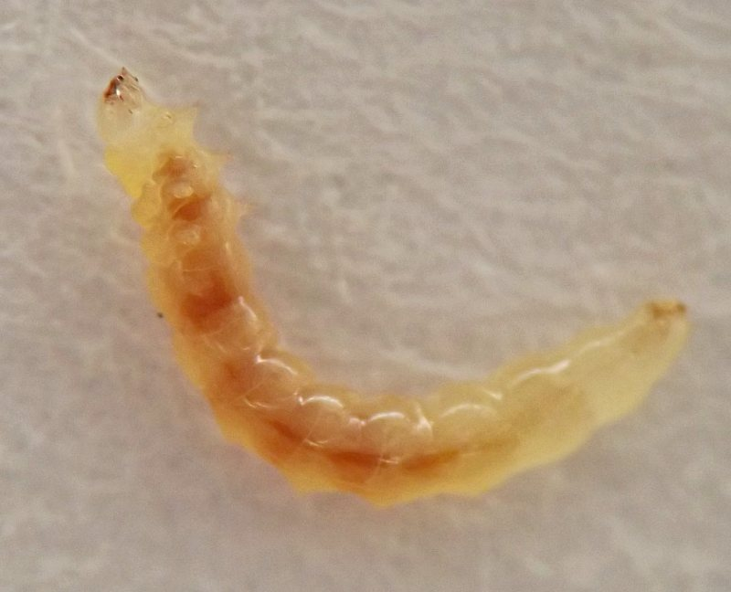
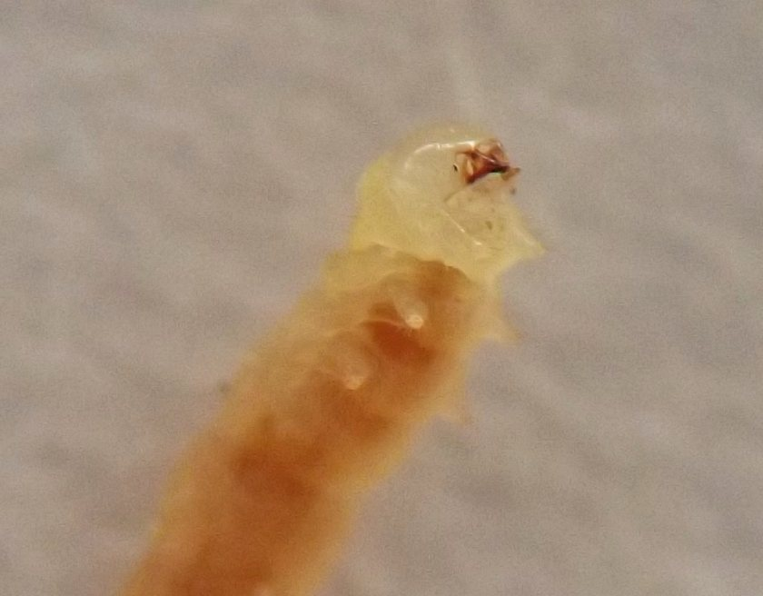
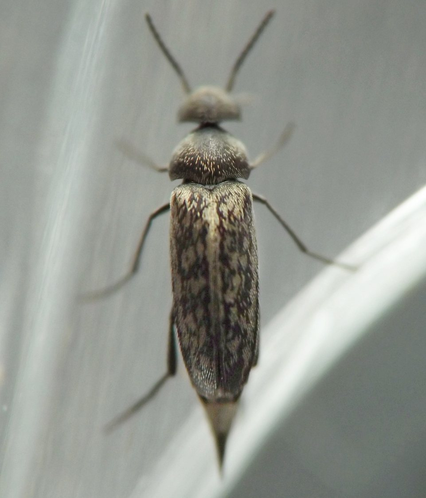

Stem borer (Coleoptera: Mordellidae) in Blephilia
| Record no.: | 0099 |
|---|---|
| Feeding guild: | Stem borer |
| Taxonomy: | Coleoptera: Mordellidae: cf. Mordellina pustulata |
| Stages observed: | trace, larva, adult |
| Distribution observed: | IA |
| Hosts in Blephilia: | B. hirsuta (hairy woodmint) |
In late July, I discovered a larva in a stem that I collected with several other stems of the host in late June and held in a rearing container. I also found mature or nearly mature larvae overwintering in the lower portions of dead stems in early April, accompanied by their feeding sign from the previous growing season in the stem interiors. I reared an adult from these in late April, and the pattern of pubescence on its elytra appeared to be consistent with that of Mordellina pustulata. Within the mint family, I have also reared similar-looking adults from Mentha arvensis (record #0329) and Agastache sp. (record #0016).

 Prev
Prev
{kind=link}
{kind=link}

{kind=link}

{kind=link}
{kind=link}
{kind=link}
{kind=link}
Page created: October 2, 2025. Last update: none